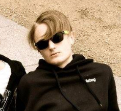

Hey! Det mig, Jonas. Jeg er født, opvokset
og bosiddende i Åbyhøj og er 20 år gammel.
Jeg kommer direkte fra en STX, som jeg tog
på Århus Statsgymnasium, hvor jeg havde
Musik A, Engelsk A og Mat A.

Jeg valgte multimediedesign, da jeg altid har haft en forkærlighed for at redigere forskellige medier især videoer. Da jeg ikke fik noget fast arbejde efter gym, besluttede jeg mig for at sætte mig tilbage på skolebænken igen.
Jeg har aldrig prøvet at kode før, men jeg føler mig allerede godt tilpas dette univers.